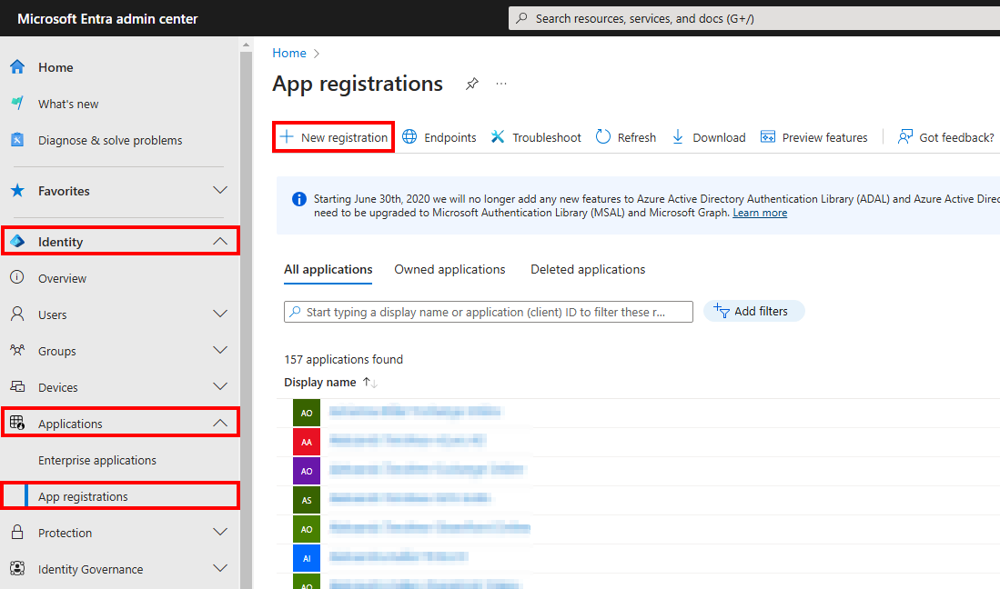
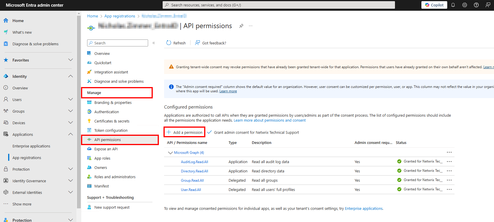
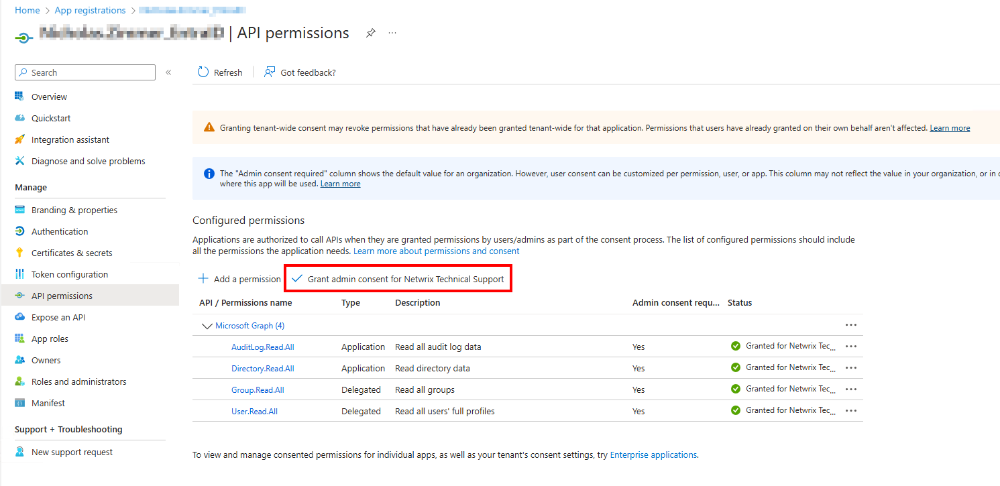
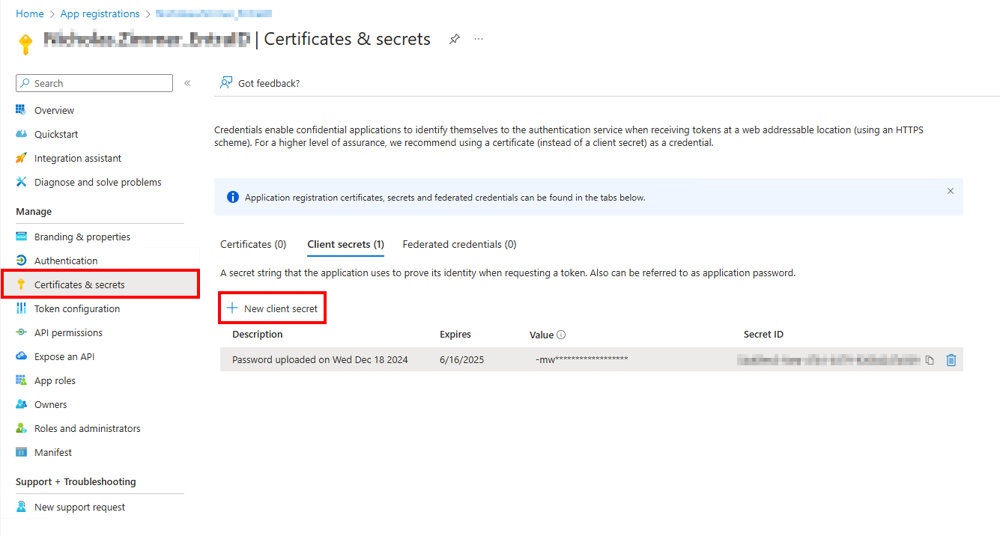
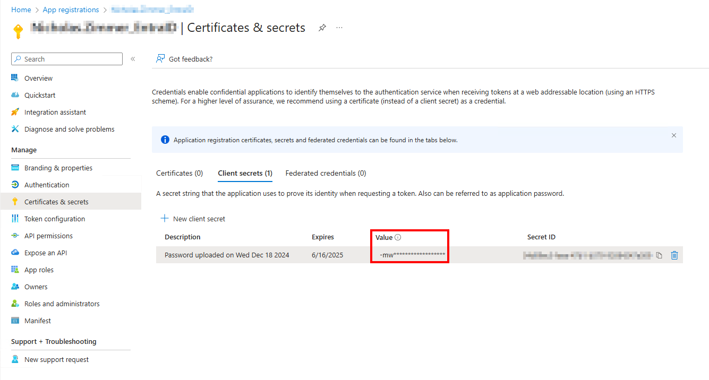
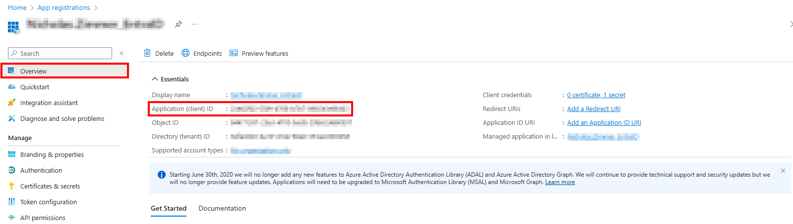

Question
How do I set up Entra ID Auditing without using the
AZ_RegisterAzureAppAuth instant job?
Answer
While it is always recommended to use the AZ_RegisterAzureAppAuth instant
job to set up the Entra app for auditing, it can be done manually if necessary (e.g.,
when MFA cannot be temporarily disabled for a Global Admin account).
Entra ID Inventory Scans & Entra ID Reports
-
Open the Microsoft Entra admin center.
-
Navigate to Identity > Applications > App registrations and select + New registration.

-
On the Register an application page, set the following:
-
Name: Something meaningful, e.g.,
NEA_EntraID. - Support account types: Accounts in this org. directory only.
-
Name: Something meaningful, e.g.,
-
From the Application Overview page, navigate to Manage > API Permissions and select Add a permission.

-
From the Request API permissions page, select Microsoft Graph.

-
Add the following Delegated Permissions:
Group.Read.All– Read all groupsUser.Read.All– Read all users' full profiles
-
Add the following Application Permissions:
AuditLog.Read.All– Read all audit log dataDirectory.Read.All– Read directory data
-
Add the following Delegated Permissions:
-
After adding the aforementioned permissions, grant them admin consent by selecting Grant admin consent for {TENANT NAME}.

-
Navigate to the Entra app registration and on the Certificates & secrets page, select + New client secret.

-
On the Add a client secret page, add the following:
-
Description: Something meaningful, e.g.,
NEA Entra ID. - Expires: Usually recommended to set this to the longest option OR per the organization’s internal certificate expiration timeframe.
-
Description: Something meaningful, e.g.,
-
After creating the client secret, copy the secret Value to a notepad.

-
Next, navigate to the Overview tab and copy the Application (client) ID which is needed for the NEA Connection Profile.

NEA Connection Profile
-
In NEA, navigate to Global Options > Connection and create a connection profile with the same name as the Entra app registration, using the following:
- Account Type: Azure Active Directory
- Client ID: Application (client) ID from Entra App Registration
- Key: Secret Value
-
Create a host list with the Entra site, e.g., NWXSUPPORT.ONMICROSOFT.COM.
-
Set the Entra ID Inventory job group to run against the Entra host list.
-
Set the Entra ID Inventory job group to use the Entra Connection Profile.
-
Schedule the Entra ID Inventory job group to run every day, or at least before the Entra ID job group.
NOTE: This job is also required in order to run Exchange Online & SharePoint Online modules.